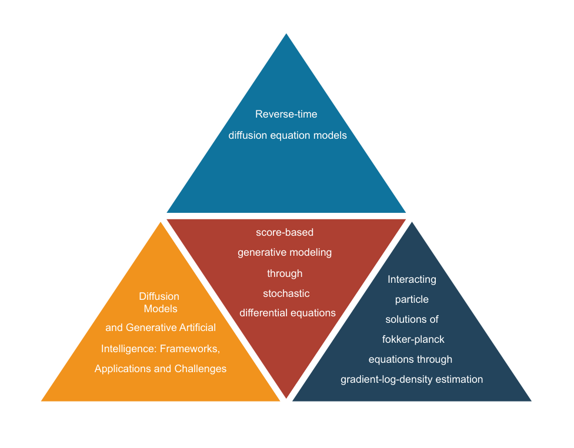
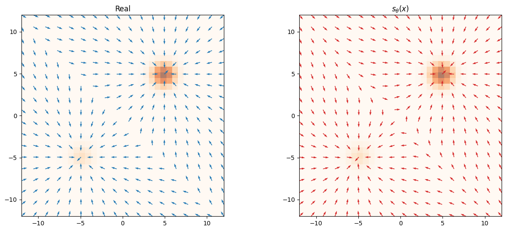
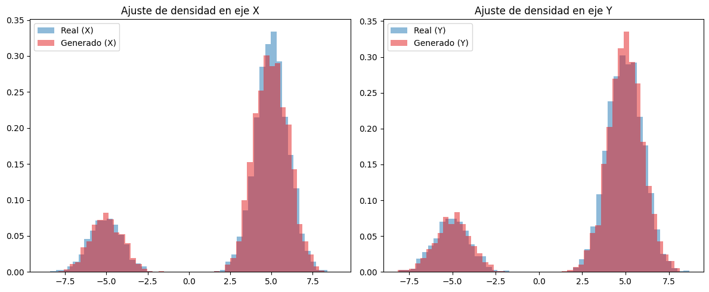

From density estimation to score matching, denoising objectives,
noise-conditioned score networks, and Langevin sampling.

Conceptual framework of score-based generative modeling.
Data Distribution & Parametric Model
Let $p_{\mathrm{data}}(\mathbf{x})$ denote an unknown probability
distribution on $\mathbb{R}^d$ from which we observe a finite
collection of independent samples $\{\mathbf{x}_1,\dots,\mathbf{x}_N\}$.
The central problem in generative modeling is to construct a
parametric model $p_{\boldsymbol{\theta}}(\mathbf{x})$
that approximates $p_{\mathrm{data}}$ and enables efficient sample generation.
Definition: Data Distribution
Let $\mathbf{x}_1,\dots,\mathbf{x}_N\in\mathbb{R}^d$ be i.i.d. samples
from a probability density
$p_{\mathrm{data}}:\mathbb{R}^d\to[0,\infty)$.
Let $K\subset\mathbb{R}^d$ be a compact set containing the main mass of
$p_{\mathrm{data}}$. We assume
$$
p_{\mathrm{data}}\in\mathcal{L}^{1}(K)\cap\mathcal{C}^{2}(K),
\qquad
p_{\mathrm{data}}(\mathbf{x})\to 0
\;\text{ as }\;
\|\mathbf{x}\|\to\infty.
$$
We observe only the empirical collection
$$
\mathbf{x}_1,\ldots,\mathbf{x}_N
\overset{\mathrm{i.i.d.}}{\sim}
p_{\mathrm{data}}.
$$
Definition: Parametric Model
Approximate $p_{\mathrm{data}}(\mathbf{x})$ by a model specified via
an unnormalized density $q_{\boldsymbol{\theta}}(\mathbf{x})\ge 0$:
$$
p_{\boldsymbol{\theta}}(\mathbf{x})
=
\frac{q_{\boldsymbol{\theta}}(\mathbf{x})}{Z(\boldsymbol{\theta})},
\qquad
Z(\boldsymbol{\theta})
=
\int_{\mathbb{R}^d}
q_{\boldsymbol{\theta}}(\boldsymbol{\xi})\,d\boldsymbol{\xi},
$$
with $\boldsymbol{\theta}\in\Theta\subset\mathbb{R}^m$.
The log-likelihood decomposes as
$$
\log p_{\boldsymbol{\theta}}(\mathbf{x})
=
\log q_{\boldsymbol{\theta}}(\mathbf{x})
\;-\;
\log Z(\boldsymbol{\theta}).
$$
Kullback–Leibler Divergence
A natural measure of discrepancy between two probability densities is the
Kullback–Leibler divergence. Intuitively,
$D_{\mathrm{KL}}(p\|q)$ quantifies the expected amount of information
(measured in nats) lost when $q$ is used to approximate the true
distribution $p$. It arises naturally from the principle of
maximum likelihood: the parameter
$\boldsymbol{\theta}$ that minimizes
$D_{\mathrm{KL}}(p_{\mathrm{data}}\|p_{\boldsymbol{\theta}})$ is exactly
the one that maximizes the log-likelihood of the data under
$p_{\boldsymbol{\theta}}$.
Definition: Kullback–Leibler Divergence
Let $p$ and $q$ be probability densities on $\mathbb{R}^d$ with $p\ll q$.
The Kullback–Leibler divergence from $q$ to $p$ is defined as
$$
D_{\mathrm{KL}}(p\|q)
=
\mathbb{E}_{\mathbf{x}\sim p}\!\left[
\log p(\mathbf{x}) - \log q(\mathbf{x})
\right].
$$
It is non-negative and vanishes if and only if $p = q$ almost everywhere.
Connection to Maximum Likelihood
Since $\mathbb{E}_{\mathbf{x}\sim p_{\mathrm{data}}}[\log p_{\mathrm{data}}(\mathbf{x})]$
does not depend on $\boldsymbol{\theta}$, minimizing the KL divergence reduces
to maximizing the expected log-likelihood:
Theorem — UAT for Densities
For any continuous density $p_{\mathrm{data}}(\mathbf{x})$ on $\mathbb{R}^d$
and any $\epsilon>0$, there exists a neural-network-based parametric model
$p_{\boldsymbol{\theta}}(\mathbf{x})$ such that
$$
D_{\mathrm{KL}}\bigl(p_{\mathrm{data}}\|p_{\boldsymbol{\theta}}\bigr)<\epsilon.
$$
The proof relies on the Universal Approximation Theorem (Cybenko 1989;
Hornik 1989): neural networks with a single hidden layer and sigmoidal
activations uniformly approximate any continuous function on compact sets.
Let $K\subset\mathbb{R}^d$ contain the main mass of $p_{\mathrm{data}}$.
For $f(\mathbf{x})=\log p_{\mathrm{data}}(\mathbf{x})$ and any $\epsilon_1>0$,
there exists a network $\phi_{\boldsymbol{\theta}}$ with
$$
\left|\log p_{\mathrm{data}}(\mathbf{x})-\phi_{\boldsymbol{\theta}}(\mathbf{x})\right|
< \epsilon_1,
\qquad\forall\,\mathbf{x}\in K.
$$
We construct the parametric model via the unnormalized energy
$\exp(\phi_{\boldsymbol{\theta}}(\mathbf{x}))$:
The next step is to bound $D_{\mathrm{KL}}(p_{\mathrm{data}}\|p_{\boldsymbol{\theta}})$
in terms of $\epsilon_1$, which requires controlling both the
approximation error and the normalization constant $Z(\boldsymbol{\theta})$.
Using the decomposition
$\log p_{\boldsymbol{\theta}}(\mathbf{x})=\phi_{\boldsymbol{\theta}}(\mathbf{x})-\log Z(\boldsymbol{\theta})$,
the KL divergence splits into two controllable terms:
Integrating against $p_{\mathrm{data}}$ and using
$\int_K p_{\mathrm{data}}\approx 1$ yields
$e^{-\epsilon_1}< Z(\boldsymbol{\theta})< e^{\epsilon_1}$,
hence $|\log Z(\boldsymbol{\theta})|<\epsilon_1$.
Combining both estimates,
$D_{\mathrm{KL}}(p_{\mathrm{data}}\|p_{\boldsymbol{\theta}}) < \epsilon_1+\epsilon_1 = 2\epsilon_1$.
Choosing $\epsilon_1=\epsilon/2$ completes the proof. $\quad\square$
Evaluating $Z(\boldsymbol{\theta})=\int q_{\boldsymbol{\theta}}\,d\boldsymbol{\xi}$
is intractable in high dimensions. Hyvärinen (2005) proposed
score matching: minimize the squared distance between score
functions, bypassing $Z(\boldsymbol{\theta})$ entirely.
Normalization Problem & Score Function
Definition: Score Function
The score of $p_{\boldsymbol{\theta}}$ is the gradient of its log-density:
$$
\mathbf{s}_{\boldsymbol{\theta}}(\mathbf{x})
=
\nabla_{\mathbf{x}}\log p_{\boldsymbol{\theta}}(\mathbf{x}).
$$
Since $\log Z(\boldsymbol{\theta})$ is constant in $\mathbf{x}$,
$$
\mathbf{s}_{\boldsymbol{\theta}}(\mathbf{x})
=
\nabla_{\mathbf{x}}\log q_{\boldsymbol{\theta}}(\mathbf{x})
\;\underbrace{-\;\nabla_{\mathbf{x}}\log Z(\boldsymbol{\theta})}_{=\;0}
\;=\;
\nabla_{\mathbf{x}}\log q_{\boldsymbol{\theta}}(\mathbf{x}).
$$
The score is independent of $Z(\boldsymbol{\theta})$.
Geometric Interpretation
The score $\nabla_{\mathbf{x}}\log p_{\mathrm{data}}$ defines a
vector field on $\mathbb{R}^d$ pointing toward regions of
higher probability, independent of global scaling.
When data lies on a submanifold $\mathcal{M}\subset\mathbb{R}^d$,
the density is degenerate off $\mathcal{M}$ and the score is
undefined or explosive near it. Adding noise perturbations
expands the support to all of $\mathbb{R}^d$, yielding a well-behaved
score field everywhere.
The score defines a vector field over $\mathbb{R}^{d}$ pointing toward local
increases of log-density. Hence, instead of comparing normalized densities, one
may compare their score fields.
When $p=p_{\mathrm{data}}$, this is exactly
$D_F(p_{\mathrm{data}}\|p_\theta)$. The obstacle is that
$\nabla\log p_{\mathrm{data}}$ is unknown.
Implicit Score Matching
Proposition
Assume $p$ is a smooth density on $\mathbb{R}^{d}$ such that
$p(\mathbf{x})\to0$ and $\|\mathbf{s}_\theta(\mathbf{x})\|\to0$ as
$\|\mathbf{x}\|\to\infty$. Then
$$
E(\theta;p)=I(\theta;p)+C,
$$
where $C$ is independent of $\theta$ and
$$
I(\theta;p)
=
\mathbb{E}_{\mathbf{x}\sim p}
\left[
\nabla_{\mathbf{x}}\cdot\mathbf{s}_\theta(\mathbf{x})
+
\frac12\|\mathbf{s}_\theta(\mathbf{x})\|_2^2
\right].
$$
Proof
Expanding the square,
$$
E(\theta;p)
=
\frac12\mathbb{E}_p[\|\mathbf{s}_\theta\|^2]
-
\mathbb{E}_p[\mathbf{s}_\theta\cdot\nabla\log p]
+
\frac12\mathbb{E}_p[\|\nabla\log p\|^2].
$$
The last term is $C$.
Proof, continued
For the cross term,
$$
\mathbb{E}_p[\mathbf{s}_\theta\cdot\nabla\log p]
=
\int\mathbf{s}_\theta(\mathbf{x})\cdot\nabla p(\mathbf{x})\,d\mathbf{x}.
$$
Integration by parts and the decay hypotheses give
$$
\int\mathbf{s}_\theta\cdot\nabla p
=
-\int p(\mathbf{x})\,\nabla\cdot\mathbf{s}_\theta(\mathbf{x})\,d\mathbf{x}.
$$
Substitution yields the stated $I(\theta;p)$.
Why Classical Score Matching Fails Practically
The implicit objective is computable, but two limitations remain. First,
evaluating $\nabla_{\mathbf{x}}\cdot\mathbf{s}_\theta(\mathbf{x})$ has cost
$O(d)$ and may involve second-order derivatives. Second, the expectation is
taken under $p_{\mathrm{data}}$, so regions with low probability mass carry
negligible loss weight:
This is critical for sampling: Langevin dynamics requires a reliable score
throughout the ambient space, not only near observed modes.

The estimated score deteriorates away from the modes.
Denoising Score Matching: Smooth the Distribution
DSM replaces the objective on the sparse data distribution with an objective on
perturbed observations. Let $\tilde{\mathbf{x}}=\mathbf{x}+\mathbf{z}$, where
$\mathbf{z}$ is independent additive noise with density $p_{\mathbf{z}}$.
Thus DSM addresses both limitations: it replaces the divergence term by a
conditional denoising target and gives training signal in regions where
$p_{\mathrm{data}}$ is negligible.
Conditional Distribution under Additive Noise
Lemma
Let $\mathbf{x}$ and $\mathbf{z}$ be independent random variables on
$\mathbb{R}^{d}$ with densities $p_{\mathrm{data}}$ and $p_{\mathbf{z}}$,
and set $\tilde{\mathbf{x}}=\mathbf{x}+\mathbf{z}$. Then
$$
q(\tilde{\mathbf{x}}\mid\mathbf{x})
=
p_{\mathbf{z}}(\tilde{\mathbf{x}}-\mathbf{x})
$$
for $\lambda^{2d}$-almost every
$(\mathbf{x},\tilde{\mathbf{x}})\in\mathbb{R}^{2d}$.
Proof
Independence gives
$f_{(\mathbf{x},\mathbf{z})}(\mathbf{x}_0,\mathbf{z}_0)
=
p_{\mathrm{data}}(\mathbf{x}_0)p_{\mathbf{z}}(\mathbf{z}_0)$.
Define the affine map
$T(\mathbf{x}_0,\mathbf{z}_0)=(\mathbf{x}_0,\mathbf{x}_0+\mathbf{z}_0)$, whose inverse is
$T^{-1}(\mathbf{x}_0,\tilde{\mathbf{x}}_0)
=
(\mathbf{x}_0,\tilde{\mathbf{x}}_0-\mathbf{x}_0)$.
Its Jacobian is
$$
J_{T^{-1}}
=
\begin{pmatrix}
I_d&0\\
-I_d&I_d
\end{pmatrix},
\qquad
\det J_{T^{-1}}=1.
$$
Hence
$$
f_{(\mathbf{x},\tilde{\mathbf{x}})}
(\mathbf{x}_0,\tilde{\mathbf{x}}_0)
=
p_{\mathrm{data}}(\mathbf{x}_0)
p_{\mathbf{z}}(\tilde{\mathbf{x}}_0-\mathbf{x}_0),
$$
and dividing by $p_{\mathrm{data}}(\mathbf{x}_0)$ gives the conditional density.
Gaussian Noise and the Conditional Score
Corollary
If $\mathbf{z}\sim\mathcal{N}(\mathbf{0},\sigma^2I_d)$, then
$$
q_\sigma(\tilde{\mathbf{x}}\mid\mathbf{x})
=
\mathcal{N}(\tilde{\mathbf{x}};\mathbf{x},\sigma^2I_d)
=
\frac{1}{(2\pi\sigma^2)^{d/2}}
\exp\left(
-\frac{\|\tilde{\mathbf{x}}-\mathbf{x}\|^2}{2\sigma^2}
\right),
$$
and
$$
\nabla_{\tilde{\mathbf{x}}}\log q_\sigma(\tilde{\mathbf{x}}\mid\mathbf{x})
=
-\frac{\tilde{\mathbf{x}}-\mathbf{x}}{\sigma^2}.
$$
Proof
By the lemma,
$q_\sigma(\tilde{\mathbf{x}}\mid\mathbf{x})
=
p_{\mathbf{z}}(\tilde{\mathbf{x}}-\mathbf{x})$.
Taking logarithms,
$$
\log q_\sigma(\tilde{\mathbf{x}}\mid\mathbf{x})
=
-\frac{d}{2}\log(2\pi\sigma^2)
-
\frac{\|\tilde{\mathbf{x}}-\mathbf{x}\|^2}{2\sigma^2}.
$$
The first term is constant in $\tilde{\mathbf{x}}$, and
$\nabla_{\tilde{\mathbf{x}}}\|\tilde{\mathbf{x}}-\mathbf{x}\|^2
=2(\tilde{\mathbf{x}}-\mathbf{x})$, yielding the stated score.
More generally,
$\nabla_{\tilde{\mathbf{x}}}\log q(\tilde{\mathbf{x}}\mid\mathbf{x})
=
\nabla_{\mathbf{u}}\log p_{\mathbf{z}}(\mathbf{u})
|_{\mathbf{u}=\tilde{\mathbf{x}}-\mathbf{x}}$.
ESM and DSM Objectives on $q_\sigma$
The explicit objective on the smoothed marginal targets the intractable score
$\nabla\log q_\sigma$. DSM replaces it by the tractable conditional score.
Theorem
For any $\sigma>0$ and any measurable $\mathbf{s}_\theta$ with
$\mathbb{E}_{q_\sigma}[\|\mathbf{s}_\theta\|_2^2]<\infty$, there exists a
constant $C$ independent of $\theta$ such that
$$
E(\theta;q_\sigma)=D(\theta;q_\sigma)+C.
$$
Consequently,
$$
\arg\min_\theta E(\theta;q_\sigma)
=
\arg\min_\theta D(\theta;q_\sigma).
$$
Proof
Apply implicit score matching to $q_\sigma$:
$$
E(\theta;q_\sigma)
=
\mathbb{E}_{q_\sigma}
\left[
\nabla_{\tilde{\mathbf{x}}}\cdot\mathbf{s}_\theta(\tilde{\mathbf{x}})
+
\frac12\|\mathbf{s}_\theta(\tilde{\mathbf{x}})\|^2
\right]+C_1.
$$
Expanding $D(\theta;q_\sigma)$ gives the same quadratic term by total
expectation:
$$
\mathbb{E}_{p_{\mathrm{data}}}
\mathbb{E}_{q_\sigma(\cdot\mid\mathbf{x})}
[\|\mathbf{s}_\theta\|^2]
=
\mathbb{E}_{q_\sigma}[\|\mathbf{s}_\theta\|^2].
$$
For the cross term, use
$q_\sigma(\tilde{\mathbf{x}})
=
\int p_{\mathrm{data}}(\mathbf{x})q_\sigma(\tilde{\mathbf{x}}\mid\mathbf{x})\,d\mathbf{x}$
and Fubini to obtain
$$
\mathbb{E}_{q_\sigma}
[\mathbf{s}_\theta\cdot\nabla\log q_\sigma]
=
\mathbb{E}_{p_{\mathrm{data}}}
\mathbb{E}_{q_\sigma(\cdot\mid\mathbf{x})}
[\mathbf{s}_\theta\cdot\nabla\log q_\sigma(\cdot\mid\mathbf{x})].
$$
Integration by parts identifies this cross term with
$-\mathbb{E}_{q_\sigma}[\nabla\cdot\mathbf{s}_\theta]$, so the two objectives
differ only by a constant.
Noise-Conditioned Score Networks
The equivalence gives a practical training rule: learn a score network
$\mathbf{s}_\theta(\mathbf{x},\sigma)$ that matches the Gaussian conditional
target at multiple noise scales
$\sigma_1>\sigma_2>\cdots>\sigma_L>0$.
Large scales provide global signal; small scales recover the data distribution.
The trained family approximates
$\{\nabla\log q_{\sigma_i}\}_{i=1}^{L}$.
This objective avoids computing
$\nabla_{\mathbf{x}}\cdot\mathbf{s}_\theta(\mathbf{x})$ and supplies training
signal in sparse regions. In score-based generation, it is the finite-scale
precursor to learning the time-dependent score $\nabla_{\mathbf{x}}\log p_t$.
The alignment remains accurate near the modes and through the low-density
valley.
Annealed Langevin Sampling
Starting from noise, samples are refined along the learned score field with
a decreasing noise schedule from $\sigma_{\max}=4.0$ to
$\sigma_{\min}=0.001$.
Bimodal target:
$p_{\mathrm{data}}(x)=0.2\,\mathcal{N}(x;\mu_1,I)+0.8\,\mathcal{N}(x;\mu_2,I)$
with $\mu_1=(-5,-5)$, $\mu_2=(5,5)$.
📐 Score field: increasing $\sigma$ smooths the field globally.
|
🌀 DSM mode: click canvas to place $x$; orange $= -(\tilde{x}-x)/\sigma^2$, green $= \nabla\log q_\sigma(\tilde{x})$.
|
⚡ Langevin: particles converge to $p_{\mathrm{data}}$ via annealed dynamics.
Empirical Conclusion and Transition to SDEs

Generated marginals versus the true distribution.
The empirical results corroborate the theoretical chain: score matching is
normalization-free, DSM gives a tractable conditional target, NCSNs learn a
family of smoothed scores, and annealed Langevin dynamics turns those scores
into samples.